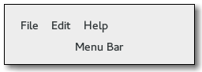

Gtk.MenuBar
Example
Methods
| Inherited: | Gtk.MenuShell (14), Gtk.Container (27), Gtk.Widget (256), GObject.Object (33), Gtk.Buildable (10) |
|---|
| static | new() |
| static | new_from_model(model) |
| get_child_pack_direction() | |
| get_pack_direction() | |
| set_child_pack_direction(child_pack_dir) | |
| set_pack_direction(pack_dir) |
Virtual Methods
| Inherited: | Gtk.MenuShell (9), Gtk.Container (10), Gtk.Widget (82), GObject.Object (7), Gtk.Buildable (10) |
|---|
Properties
| Inherited: | Gtk.MenuShell (1), Gtk.Container (3), Gtk.Widget (38) |
|---|
| Name | Type | Flags | Short Description |
|---|---|---|---|
| child-pack-direction | Gtk.PackDirection | r/w | The child pack direction of the menubar |
| pack-direction | Gtk.PackDirection | r/w | The pack direction of the menubar |
Style Properties
| Inherited: | Gtk.Widget (17) |
|---|
| Name | Type | Default | Flags | Short Description |
|---|---|---|---|---|
| internal-padding | int | 0 | r | Amount of border space between the menubar shadow and the menu items |
| shadow-type | Gtk.ShadowType | Gtk.ShadowType.OUT | r | Style of bevel around the menubar |
Signals
| Inherited: | Gtk.MenuShell (8), Gtk.Container (4), Gtk.Widget (69), GObject.Object (1) |
|---|
Fields
| Inherited: | Gtk.MenuShell (1), Gtk.Container (1), Gtk.Widget (1), GObject.InitiallyUnowned (3), GObject.Object (3) |
|---|
| Name | Type | Access | Description |
|---|---|---|---|
| menu_shell | Gtk.MenuShell | r |
Class Details
- class Gtk.MenuBar(**kwargs)
Bases: Gtk.MenuShell
The Gtk.MenuBar is a subclass of Gtk.MenuShell which contains one or more Gtk.MenuItems. The result is a standard menu bar which can hold many menu items.
- static new()
Returns: the new menu bar, as a Gtk.Widget Return type: Gtk.Widget Creates a new Gtk.MenuBar
- static new_from_model(model)
Parameters: model (Gio.MenuModel) – a Gio.MenuModel Returns: a new Gtk.MenuBar Return type: Gtk.Widget Creates a new Gtk.MenuBar and populates it with menu items and submenus according to model.
The created menu items are connected to actions found in the Gtk.ApplicationWindow to which the menu bar belongs - typically by means of being contained within the Gtk.ApplicationWindows widget hierarchy.
New in version 3.4.
- get_child_pack_direction()
Returns: the child pack direction Return type: Gtk.PackDirection Retrieves the current child pack direction of the menubar. See Gtk.MenuBar.set_child_pack_direction ().
New in version 2.8.
- get_pack_direction()
Returns: the pack direction Return type: Gtk.PackDirection Retrieves the current pack direction of the menubar. See Gtk.MenuBar.set_pack_direction ().
New in version 2.8.
- set_child_pack_direction(child_pack_dir)
Parameters: child_pack_dir (Gtk.PackDirection) – a new Gtk.PackDirection Sets how widgets should be packed inside the children of a menubar.
New in version 2.8.
- set_pack_direction(pack_dir)
Parameters: pack_dir (Gtk.PackDirection) – a new Gtk.PackDirection Sets how items should be packed inside a menubar.
New in version 2.8.
Property Details
- Gtk.MenuBar.props.child_pack_direction
Name: child-pack-direction Type: Gtk.PackDirection Default Value: Gtk.PackDirection.LTR Flags: r/w The child pack direction of the menubar. It determines how the widgets contained in child menuitems are arranged.
New in version 2.8.
- Gtk.MenuBar.props.pack_direction
Name: pack-direction Type: Gtk.PackDirection Default Value: Gtk.PackDirection.LTR Flags: r/w The pack direction of the menubar. It determines how menuitems are arranged in the menubar.
New in version 2.8.